Overview
This report summarizes yield, acreage, and total production estimates for Maize, Rice, Beans across focus countries. The data is updated monthly in the RFBS Dashboard via a standard data file. Our model reports on the main growing season for countries with available historical yield data for model training.
Data Limitations and Model Caveats
The data used in this report has limitations due to gaps in historical records and variations in data collection methods:
- Historical data accuracy and consistency vary by country
- Our model reflects these data gaps, as it is trained on available information
- We view these limitations as opportunities to improve data sharing and scaling methods with our country partners
Current Focus: Data presented this month covers Maize, Rice, Beans systems in Uganda, Rwanda, Malawi, United Republic Of Tanzania, Kenya, which are currently in season.
Note on excluded countries: Zambia is not included in this month's bulletin. This country is currently post-harvest or out of the growing season — once harvesting begins, vegetation indices (NDVI/EVI) are no longer reliable predictors of crop yield and model forecasts are suspended until the next season commences.
Executive Summary
Current projections for May 2026 Beans, Maize, Rice production in Kenya, Malawi, Rwanda, Uganda, United Republic Of Tanzania show varying forecasts between USDA, FAO and UMD-XylemLab models, as summarized in Table and Figure below. For maize, UMD-XylemLab generally presents wider production ranges reflecting regional variability, such as Malawi's 2.34–5.67 million MT and Kenya's 2.89–6.75 million MT, compared to USDA and FAO averages that are more conservative (e.g., Malawi at 3.0–3.5 million MT, Kenya at 4.28–4.4 million MT). Uganda shows USDA and UMD estimates closer in magnitude (around 2.8–5.0 million MT) while FAO is markedly lower at 2.8 million MT with a smaller area reported. Rice forecasts indicate that FAO and USDA estimates for Kenya (around 4.05–5.18 million MT) exceed UMD's much lower range (0.01–0.05 million MT), likely due to differing geographic focus and yield assumptions. Beans predictions by UMD-XylemLab display considerable variability across countries, with Kenya ranging from 0.43 to 1.8 million MT and Uganda from 1.1 to 4.24 million MT, emphasizing uncertainty in area and yield estimates. Tanzania's UMD-only data shows modest maize and rice productions with narrow ranges, reflecting a partial geographic scope. Overall, discrepancies across models highlight the impact of geographic scope, seasonal dynamics, and methodological differences on production forecasts for May 2026 in these East African countries.
All Sources Interactive Chart
All Sources Comparison Table
| Country | Crop | Source | Area (Million ha) | Yield (MT/ha) | Min - Max Production (Million MT) |
|---|---|---|---|---|---|
| Malawi | Maize | USDA | 1.8 | 1.67 | 3.0 |
| FAO | 1.8 | 1.76 | 3.5 | ||
| UMD-XylemLab | 1.83 | 2.05 | 2.34 - 5.67 | ||
| Rice | FAO | 0.07 | 1.6 | 0.12 | |
| UMD-XylemLab | 0.08 | 1.68 | 0.06 - 0.25 | ||
| Beans | UMD-XylemLab | 0.37 | 0.68 | 0.11 - 0.45 | |
| Kenya | Maize | USDA | 2.3 | 1.91 | 4.4 |
| FAO | 2.4 | 1.76 | 4.28 | ||
| UMD-XylemLab | 2.55 | 1.57 | 2.89 - 6.75 | ||
| Rice | USDA | 0.06 | 5.18 | 4.1 | |
| FAO | 0.04 | 5.8 | 4.05 | ||
| UMD-XylemLab | 0.02 | 1.93 | 0.01 - 0.05 | ||
| Beans | UMD-XylemLab | 1.23 | 0.7 | 0.43 - 1.8 | |
| Uganda | Maize | USDA | 2.3 | 2.17 | 5.0 |
| FAO | 1.1 | 2.5 | 2.8 | ||
| UMD-XylemLab | 2.15 | 2.22 | 2.8 - 5.66 | ||
| Rice | USDA | 0.23 | 1.59 | 5.05 | |
| FAO | 0.2 | 1.3 | 2.75 | ||
| UMD-XylemLab | 0.23 | 1.24 | 0.14 - 0.38 | ||
| Beans | UMD-XylemLab | 1.03 | 1.66 | 1.1 - 4.24 | |
| Rwanda | Maize | USDA | 0.3 | 1.5 | 0.45 |
| FAO | 0.32 | 1.59 | 0.51 | ||
| UMD-XylemLab | 0.32 | 1.47 | 0.31 - 0.69 | ||
| Rice | FAO | 0.03 | 4.1 | 0.13 | |
| UMD-XylemLab | 0.03 | 4.15 | 0.06 - 0.19 | ||
| Beans | UMD-XylemLab | 0.63 | 0.89 | 0.19 - 0.76 | |
| United Republic Of Tanzania | Maize | UMD-XylemLab | 0.95 | 1.32 | 0.78 - 1.77 |
| Rice | UMD-XylemLab | 0.17 | 1.69 | 0.16 - 0.51 | |
| Beans | UMD-XylemLab | 0.13 | 0.7 | 0.05 - 0.18 |
Regional Overview/Conditions
Country Summary
- Uganda: Crop conditions across Uganda are generally stable for May 2026 with no alarming yield anomalies. Beans show stable trends with slight positive yield anomalies around 1.1% to 1.6% across Central, Eastern, Northern, and Western regions. Maize exhibits small negative yield anomalies near -0.3% to -0.5% regionally but also maintains a stable trend. Rice conditions are mostly stable, although Western Uganda shows a notable positive anomaly of 12%, in contrast to small negative anomalies in Central, Eastern, and Northern regions ranging from -1.5% to -5.2%. No crop region is currently flagged as poor; beans and maize have stable outlooks while rice requires monitoring in eastern and northern parts due to mild negative anomalies.
- Rwanda: Crop conditions are stable across Rwanda in May 2026. For beans, all regions including Amajyaruguru, Amajyepfo, Iburasirazuba, Iburengerazuba, and Umujyi Wa Kigali show stable trends with minimal predicted yield anomalies, mostly near zero or slightly positive, indicating no alarming yield deviations. Maize also exhibits stable conditions in all regions, with small negative yield anomalies ranging from -0.01 to -0.75 percent. Rice conditions are stable but show modest negative yield anomalies, especially in Amajyepfo (-6.53%), Iburasirazuba (-8.09%), Umujyi Wa Kigali (-8.49%), and Iburengerazuba (-2.36%), signaling slight but notable yield reductions in rice. No regions report poor conditions, but the negative rice anomalies warrant monitoring.
- Malawi: Crop conditions are stable across Malawi for beans, maize, and rice in May 2026. Beans show stable trends with yield anomalies close to zero in the Central (0.0) and Southern Regions (0.0), and a slight positive anomaly in the Northern Region (0.01). Maize exhibits small positive yield anomalies between 0.03 and 0.04 across all regions, indicating generally favorable and stable conditions. Rice shows higher positive yield anomalies ranging from 0.19 to 0.26, especially notable in the Southern Region (0.26), signaling favorable conditions but with higher variability as reflected by larger standard errors. No regions report poor conditions; the yields and anomalies confirm stable and favorable crop health.
- United Republic Of Tanzania: Crop conditions for beans, maize, and rice in the bimodal regions of Tanzania in May 2026 are generally stable with no major anomalies reported. Beans exhibit stable trends across all monitored regions with predicted yield anomalies close to zero or slightly positive, such as Mwanza and Shinyanga with yields around 0.93 to 1.12 Mg/ha. Maize similarly shows stable conditions with mostly neutral to very small negative anomalies, except Dar Es Salaam region where a slight negative anomaly (-0.51%) is observed; yields are highest in Kilimanjaro (2.04 Mg/ha) and Geita (1.91 Mg/ha). Rice shows a mixed pattern with some coastal and island regions experiencing negative anomalies up to -8.31% in Dar Es Salaam and Kusini Unguja (-6.99%), while Kagera and Mara regions show small positive anomalies close to 9.9%. No alarming conditions are flagged, but variability is notable in rice yields particularly in coastal zones.
- Kenya: Bean crop conditions are generally stable with most regions showing neutral or slight positive yield anomalies around zero and under a stable trend. No alarming negative anomalies exist, although yields vary significantly across counties, ranging from as low as 0.14 Mg/ha in Marsabit to 1.36 Mg/ha in Baringo. Maize shows more variability, with many regions experiencing small negative yield anomalies typically around -0.01 to -0.02 Mg/ha and slight declines in yield anomalies, signaling some production stress especially in arid and semi-arid counties such as Mandera, Marsabit, and Garissa. However, several Rift Valley and western counties like Trans Nzoia and Uasin Gishu report relatively high predicted yields above 4 Mg/ha and stable trends. Rice conditions are stable but with notable negative yield anomalies across regions typically between -0.03 and -0.31 Mg/ha, the largest being in Kirinyaga (-0.31). The trend for rice also remains stable. Overall, beans present the most stable conditions, maize the widest range with moderate declines in some areas, and rice consistent but with reduced yields compared to historical averages.
Uganda
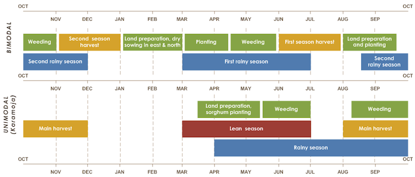
Figure: Agricultural Calendar – Uganda
Uganda is in the midst of the first harvest season for the bimodal agricultural calendar, which spans from March to July. Planting started in March, and harvesting is scheduled to begin in June and continue through July. This period marks the culmination of the main crop growth for beans, maize, and rice before the next season starts later in the year.
Regional Crop Conditions Summary
Crop conditions across Uganda are generally stable for May 2026 with no alarming yield anomalies. Beans show stable trends with slight positive yield anomalies around 1.1% to 1.6% across Central, Eastern, Northern, and Western regions. Maize exhibits small negative yield anomalies near -0.3% to -0.5% regionally but also maintains a stable trend. Rice conditions are mostly stable, although Western Uganda shows a notable positive anomaly of 12%, in contrast to small negative anomalies in Central, Eastern, and Northern regions ranging from -1.5% to -5.2%. No crop region is currently flagged as poor; beans and maize have stable outlooks while rice requires monitoring in eastern and northern parts due to mild negative anomalies.
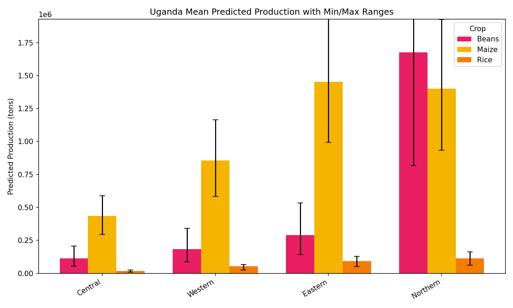
Figure: Mean Predicted Production with Min/Max – Uganda (Part 1)
Bar chart showing mean predicted production for maize, beans, and rice with min/max ranges.
Maize Maps
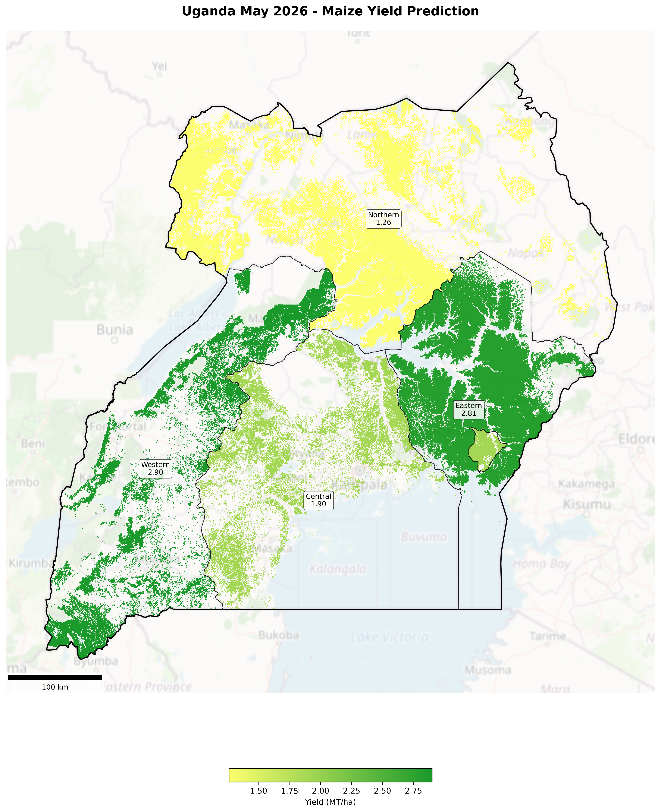
Regional Maize Yield Forecasts
In May 2026, Uganda’s Western region is the top-performing maize producer with a yield of 2.90 MgT/ha, while the Northern region shows the lowest yield at 1.26 MgT/ha, indicating a significant regional disparity with yields ranging from 1.26 to 2.90 MgT/ha.
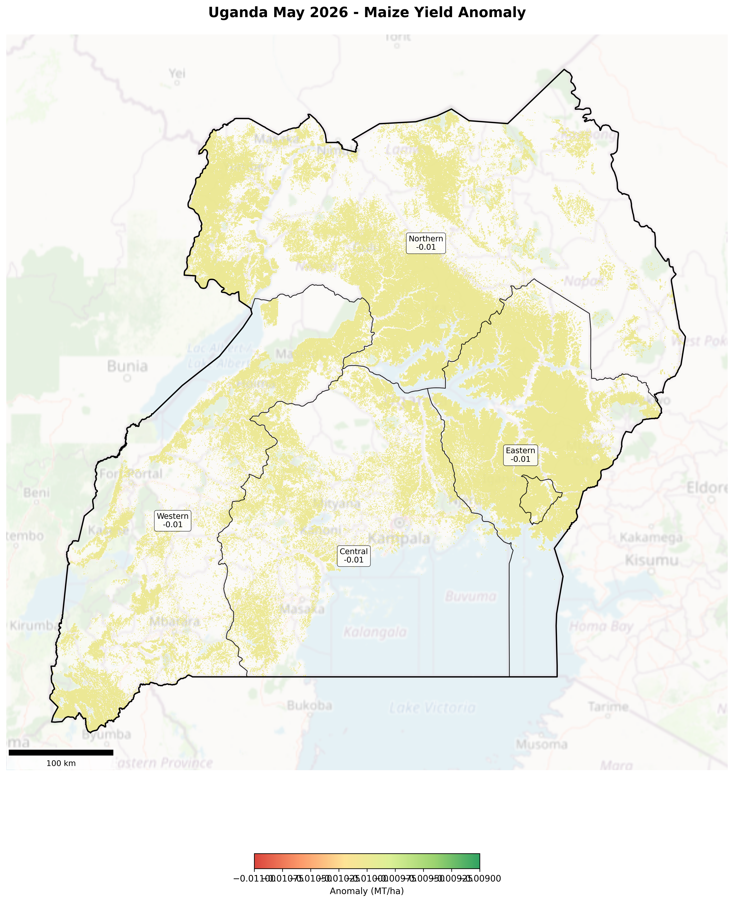
Regional Maize Yield Anomaly
In May 2026, all labeled regions in Uganda—Northern, Eastern, Western, and Central—show a slight negative maize yield anomaly of -0.01 MgT/ha, indicating uniformly below-average yields across the country with no significant extremes.
Rice Maps
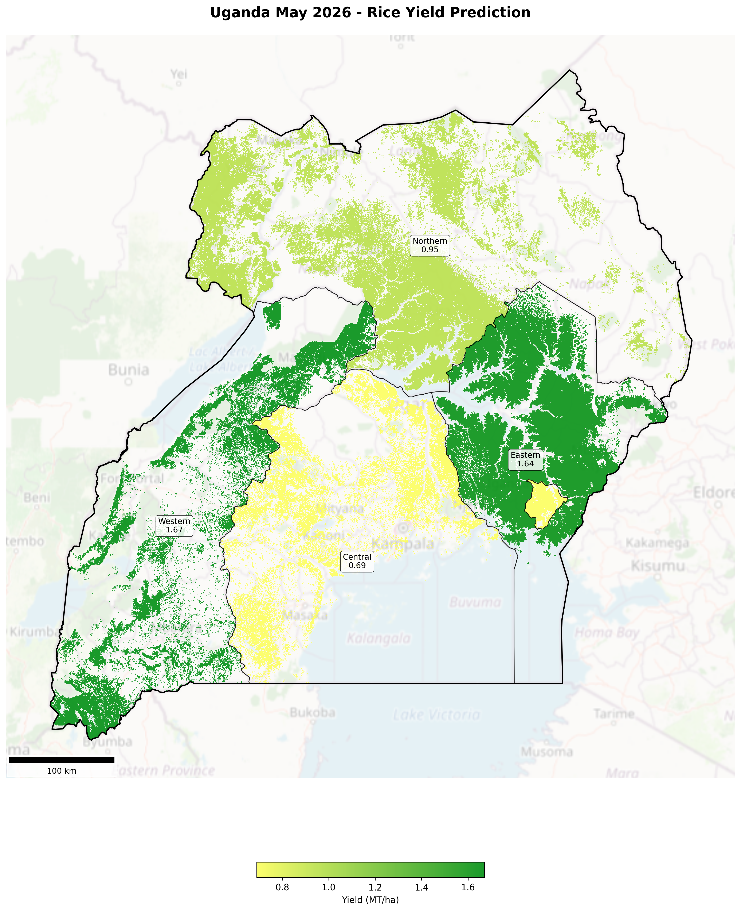
Regional Rice Yield Forecasts
In May 2026, Uganda's highest rice yields are predicted in the Western region at 1.67 MgT/ha, with Eastern close behind at 1.64 MgT/ha, while the Central region shows the lowest yield at 0.69 MgT/ha, indicating a significant regional disparity. The Northern region exhibits moderate yields around 0.95 MgT/ha.
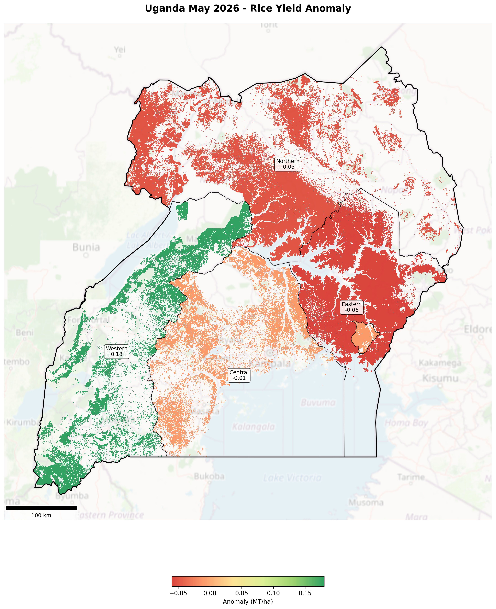
Regional Rice Yield Anomaly
In May 2026, Uganda's Western region exhibited the highest positive rice yield anomaly at 0.18 MgT/ha, while the Eastern region showed the largest negative anomaly of –0.06 MgT/ha, indicating below-average yields in the north and east and above-average yields in the west.
Beans Maps
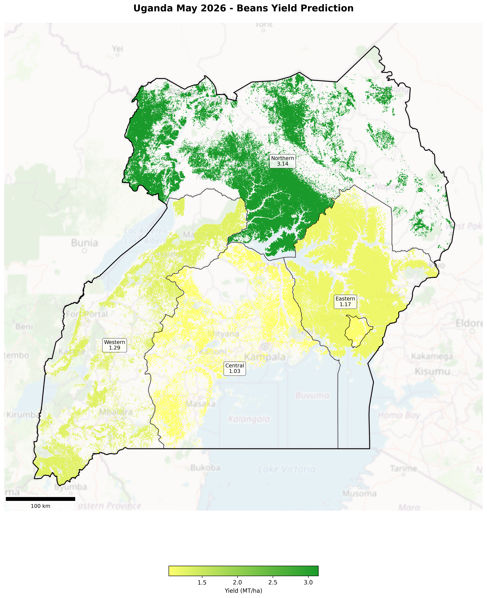
Regional Beans Yield Forecasts
In May 2026, Northern Uganda shows the highest predicted beans yield at 3.14 MgT/ha with a strong positive anomaly (green shading), while Central Uganda has the lowest yield at 1.03 MgT/ha, indicating below-average production (yellow shading).
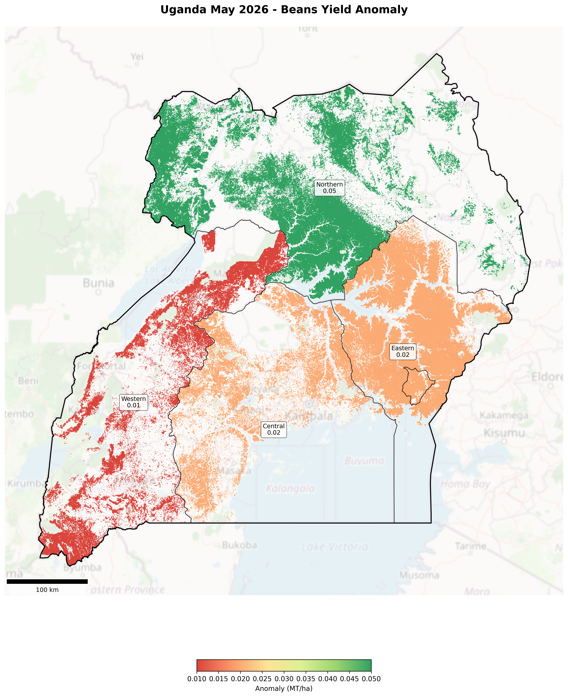
Regional Beans Yield Anomaly
In May 2026, Northern Uganda recorded the highest positive beans yield anomaly of 0.05 MgT/ha, while Western Uganda showed the lowest performance with a near-zero anomaly of 0.01 MgT/ha, indicating a mixed regional variation in yield.
Production Narrative
The total production areas are substantial across beans, maize, and rice, with maize having the largest cultivated area (Central: 229,013 ha; Eastern: 517,433 ha; Northern: 1,112,239 ha; Western: 295,313 ha) followed by beans and rice. Northern Uganda is the leading producer for both beans and maize, with mean predicted productions of approximately 1,676,496 tons for beans and 1,401,421 tons for maize. Eastern and Central regions also show high production volumes for these crops. Rice production is smaller in scale, with top outputs in Eastern (91,004 tons mean), Northern (113,315 tons mean), and Western (52,889 tons mean) regions. Forecast uncertainty is indicated by wide min-max production ranges, especially for beans in Northern Uganda (816,891 to 3,155,444 tons) and rice in Eastern Uganda (49,386 to 129,292 tons), reflecting variability in yield predictions. Overall, maize dominates as the top-performing crop by production volume, followed by beans and then rice.
Rwanda

Figure: Agricultural Calendar – Rwanda
Rwanda is currently in the long rainy season (February to July) of 2026, specifically within Season B. The harvest for beans, maize, and rice is expected to start from June and continue through July, marking the transition towards the harvesting phase.
Regional Crop Conditions Summary
Crop conditions are stable across Rwanda in May 2026. For beans, all regions including Amajyaruguru, Amajyepfo, Iburasirazuba, Iburengerazuba, and Umujyi Wa Kigali show stable trends with minimal predicted yield anomalies, mostly near zero or slightly positive, indicating no alarming yield deviations. Maize also exhibits stable conditions in all regions, with small negative yield anomalies ranging from -0.01 to -0.75 percent. Rice conditions are stable but show modest negative yield anomalies, especially in Amajyepfo (-6.53%), Iburasirazuba (-8.09%), Umujyi Wa Kigali (-8.49%), and Iburengerazuba (-2.36%), signaling slight but notable yield reductions in rice. No regions report poor conditions, but the negative rice anomalies warrant monitoring.
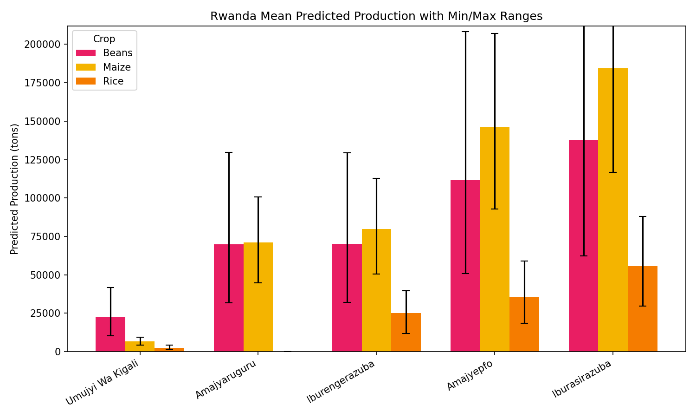
Figure: Mean Predicted Production with Min/Max – Rwanda (Part 1)
Bar chart showing mean predicted production for maize, beans, and rice with min/max ranges.
Maize Maps

Regional Maize Yield Forecasts
In May 2026, Rwanda’s top maize yield is predicted in the Amajyaruguru region, reaching 1.75 MgT/ha, while Umujyi Wa Kigali shows the lowest yield at 0.97 MgT/ha, indicating a significant regional disparity in production.

Regional Maize Yield Anomaly
In May 2026, all visible regions in Rwanda, including Amajyaruguru, Iburengerazuba, Amajye pfo, Umujyi Wa Kigali, and Iburasi razuba, show uniform negative maize yield anomalies of approximately -0.01 MgT/ha, indicating below-average performance with no extreme deviations.
Rice Maps

Regional Rice Yield Forecasts
In May 2026, the highest predicted rice yield in Rwanda is in Iburengerazuba at 4.95 MgT/ha, while Umujyi Wa Kigali shows the lowest performance at 3.66 MgT/ha. Significant regional variation is visible, with Iburengerazuba exhibiting an above-average yield and Umujyi Wa Kigali below average.

Regional Rice Yield Anomaly
In May 2026, Rwanda's Iburengerazuba region showed the best rice yield anomaly with a slight negative deviation of -0.12 MgT/ha, while the Iburasiarazuba region experienced the lowest yield anomaly with a significant negative anomaly of -0.36 MgT/ha, indicating below-average production. The eastern regions predominantly exhibit the largest negative anomalies near -0.35 MgT/ha, highlighting areas of extreme yield decline.
Beans Maps

Regional Beans Yield Forecasts
In May 2026, Umuji Wa Kigali is the top-performing region for beans yield in Rwanda with 1.69 MgT/ha, while Iburasiarazuba shows the lowest yield at 0.53 MgT/ha, indicating significant regional variation in productivity.

Regional Beans Yield Anomaly
In May 2026, bean yield anomalies in Rwanda are predominantly negative across most regions, with the highest positive anomaly of 0.01 MgT/ha observed in Umujyi Wa Kigali. Other regions like Iburengerazuba, Amajyepfo, Amayjaruguru, and Ibulasirazuba show neutral yield anomalies around 0.00 MgT/ha, highlighting localized variation.
Production Narrative
In 2026, predicted production areas reflect substantial outputs across all major crops. Beans show highest production in Iburasirazuba with a mean predicted 137,770 tons, followed by Amajyepfo (111,948 tons), and Amajyaruguru (69,998 tons). Maize production leads in Iburasirazuba with 184,285 tons predicted, with Amajyepfo (146,309 tons) and Iburengerazuba (79,898 tons) also contributing significantly. Rice, although with smaller cultivated areas, shows notable production in Iburasirazuba (55,575 tons), Amajyepfo (35,658 tons), and Iburengerazuba (25,176 tons). Maize remains the top-performing crop by production tonnage across regions. Overall trends remain stable with some uncertainty indicated by standard errors, particularly in rice yields. Production forecasts suggest a steady agricultural output for the upcoming harvest season.
Malawi

Figure: Agricultural Calendar – Malawi
Malawi is currently in the winter season planting window spanning April to November, with harvest expected to start in September and continue through November. This places the country mid-way through the winter cropping cycle, preparing for the main harvest period in the coming months.
Regional Crop Conditions Summary
Crop conditions are stable across Malawi for beans, maize, and rice in May 2026. Beans show stable trends with yield anomalies close to zero in the Central (0.0) and Southern Regions (0.0), and a slight positive anomaly in the Northern Region (0.01). Maize exhibits small positive yield anomalies between 0.03 and 0.04 across all regions, indicating generally favorable and stable conditions. Rice shows higher positive yield anomalies ranging from 0.19 to 0.26, especially notable in the Southern Region (0.26), signaling favorable conditions but with higher variability as reflected by larger standard errors. No regions report poor conditions; the yields and anomalies confirm stable and favorable crop health.
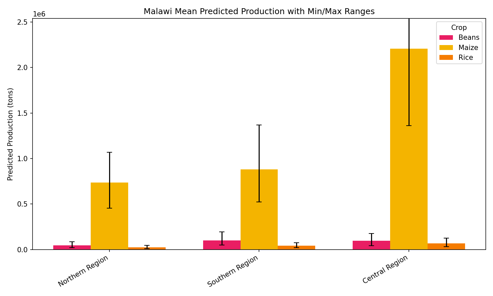
Figure: Mean Predicted Production with Min/Max – Malawi (Part 1)
Bar chart showing mean predicted production for maize, beans, and rice with min/max ranges.
Maize Maps
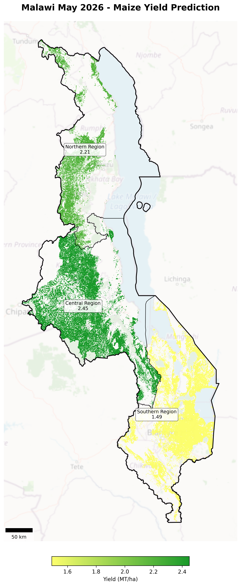
Regional Maize Yield Forecasts
In May 2026, Malawi’s Central Region is predicted to have the highest maize yield at 2.45 MT/ha, while the Southern Region shows the lowest yield at 1.49 MT/ha, indicating a significant regional disparity with the south performing notably below average.
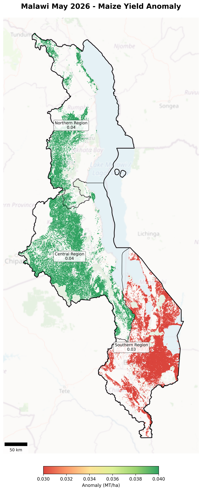
Regional Maize Yield Anomaly
In May 2026, Malawi's Northern and Central Regions show positive maize yield anomalies of 0.04 MgT/ha, indicating above-average performance, while the Southern Region experiences a lower positive anomaly of 0.03 MgT/ha, marking it as the lowest performing region on this map.
Rice Maps
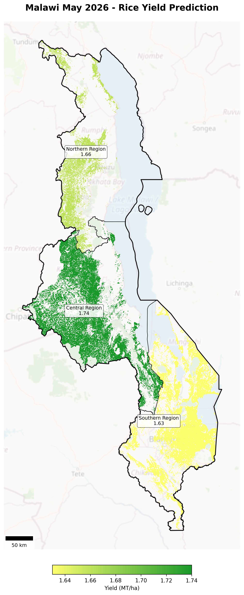
Regional Rice Yield Forecasts
In May 2026, Malawi's Central Region is predicted to have the highest rice yield at 1.74 MgT/ha, while the Southern Region shows the lowest yield with 1.63 MgT/ha, representing the map's extremes. The Northern Region’s yield stands at 1.66 MgT/ha, with color gradients indicating variation across regions.
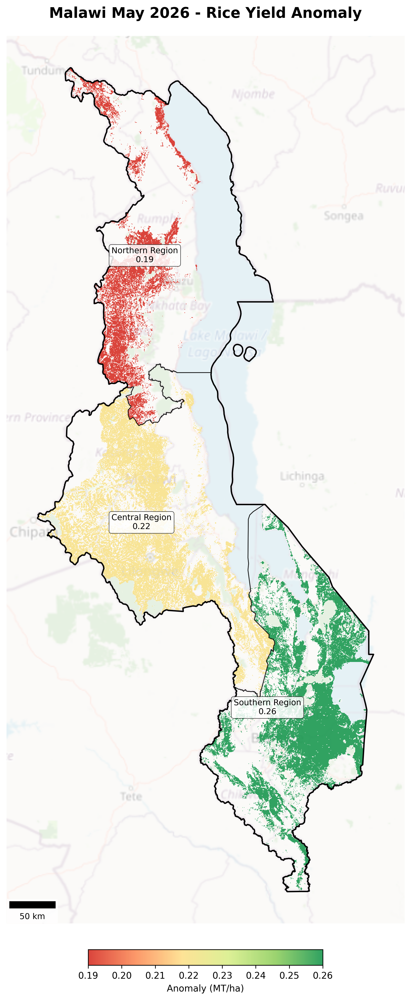
Regional Rice Yield Anomaly
In May 2026, Malawi's Southern Region showed the highest rice yield anomaly at 0.26 MgT/ha, indicating above-average performance, while the Northern Region had the lowest anomaly at 0.19 MgT/ha, reflecting below-average yields. The Central Region exhibited moderate anomalies around 0.22 MgT/ha.
Beans Maps
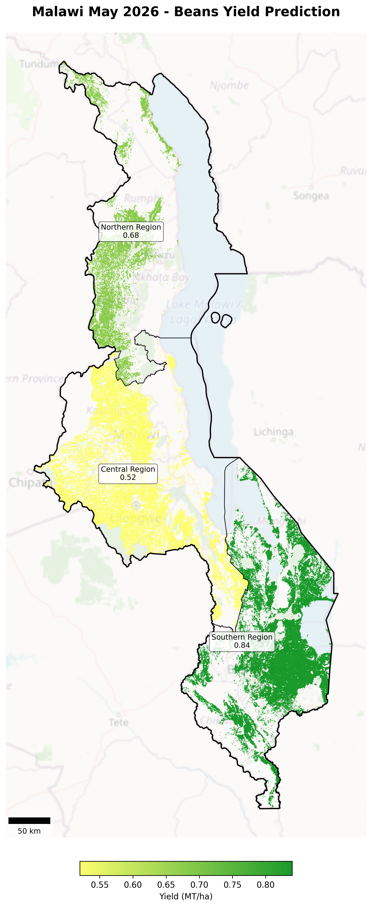
Regional Beans Yield Forecasts
In May 2026, Malawi's Southern Region shows the highest predicted bean yield at 0.84 MT/ha, while the Central Region has the lowest at 0.52 MT/ha, indicating significant regional variation in productivity. The Northern Region has a moderate yield prediction of 0.68 MT/ha.
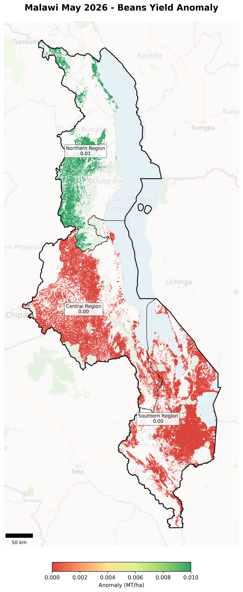
Regional Beans Yield Anomaly
In May 2026, Malawi's Northern Region shows positive bean yield anomalies up to 0.01 MgT/ha, indicating above-average production, while the Central and Southern Regions exhibit near-zero to slightly negative anomalies, suggesting below-average yields. The Northern Region represents the top-performing area with the most pronounced positive anomaly.
Production Narrative
In terms of production, maize dominates with the largest cultivated area and highest predicted production: Central Region leads with approximately 2,209,072 tons, followed by Southern Region at 882,320 tons, and Northern Region at 736,405 tons. Rice shows notable production in the Central Region at 68,747 tons, Southern Region at 42,295 tons, and Northern Region at 24,238 tons, though with greater uncertainty indicated by high standard errors and wide production ranges. Beans have smaller production volumes, with the Central Region producing an estimated 94,296 tons, Southern Region 100,038 tons, and Northern Region 45,570 tons, reflecting stable but lower overall output. The trend remains stable across all crops with no significant disruptions forecasted.
United Republic Of Tanzania
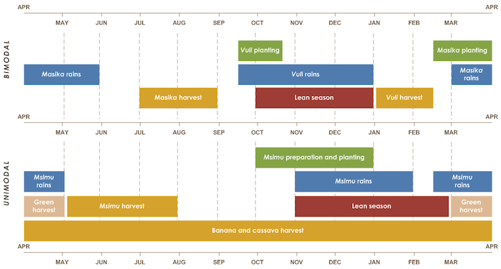
Figure: Agricultural Calendar – United Republic Of Tanzania
Tanzania is in the Masika season (March – August 2026), which is the main long-rains growing period. The prediction month is May 2026, with harvest for maize, beans, and rice expected between July and August 2026.
Regional Crop Conditions Summary
Crop conditions for beans, maize, and rice in the bimodal regions of Tanzania in May 2026 are generally stable with no major anomalies reported. Beans exhibit stable trends across all monitored regions with predicted yield anomalies close to zero or slightly positive, such as Mwanza and Shinyanga with yields around 0.93 to 1.12 Mg/ha. Maize similarly shows stable conditions with mostly neutral to very small negative anomalies, except Dar Es Salaam region where a slight negative anomaly (-0.51%) is observed; yields are highest in Kilimanjaro (2.04 Mg/ha) and Geita (1.91 Mg/ha). Rice shows a mixed pattern with some coastal and island regions experiencing negative anomalies up to -8.31% in Dar Es Salaam and Kusini Unguja (-6.99%), while Kagera and Mara regions show small positive anomalies close to 9.9%. No alarming conditions are flagged, but variability is notable in rice yields particularly in coastal zones.

Figure: Mean Predicted Production with Min/Max – United Republic Of Tanzania (Part 1)
Bar chart showing mean predicted production for maize, beans, and rice with min/max ranges.

Figure: Mean Predicted Production with Min/Max – United Republic Of Tanzania (Part 2)
Bar chart showing mean predicted production for maize, beans, and rice with min/max ranges.

Figure: Mean Predicted Production with Min/Max – United Republic Of Tanzania (Part 3)
Bar chart showing mean predicted production for maize, beans, and rice with min/max ranges.
Maize Maps — Masika
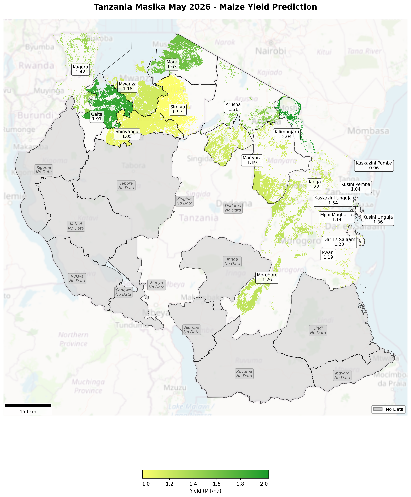
Regional Maize Yield Forecasts — Masika
In May 2026, Kilimanjaro is the top-performing region in Tanzania for Masika season maize yield with 2.04 MgT/ha, while Kaskazini Pemba shows the lowest yield at 0.96 MgT/ha. Notable extremes include high yields above 1.9 MgT/ha in Kilimanjaro and Geita, contrasting with yields around 1.0 MgT/ha or below in Kaskazini Pemba and Simiyu.
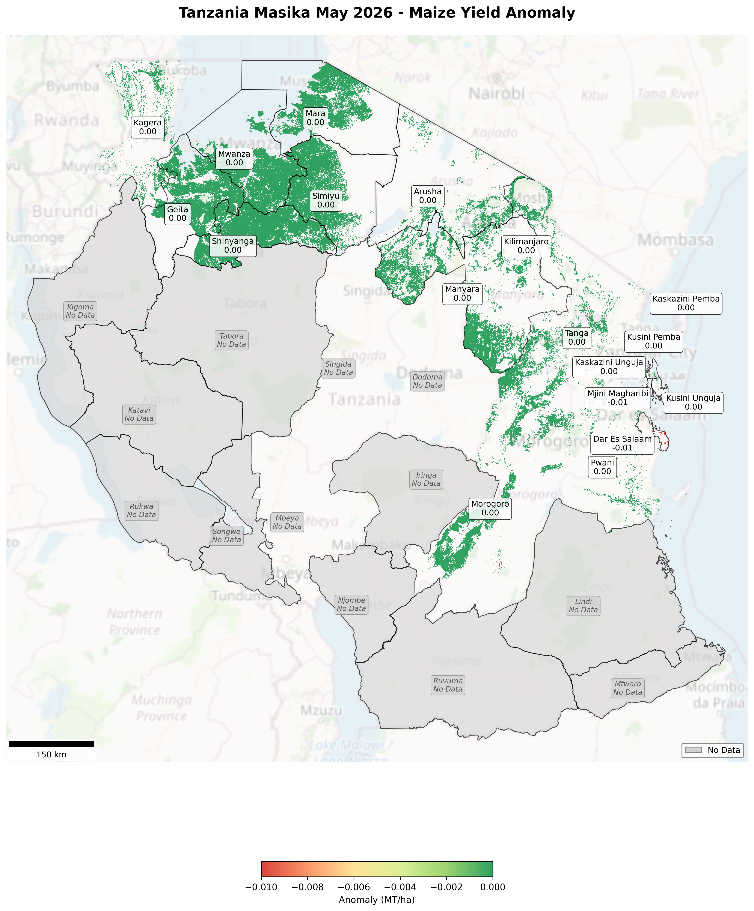
Regional Maize Yield Anomaly — Masika
In May 2026, Tanzania's Masika season maize yield anomalies are mostly zero across regions, with minimal negative anomalies of -0.01 MgT/ha observed in Mjini Magharibi and Dar Es Salaam, indicating near-average yields nationwide. No extreme positive or significant negative deviations are present.
Rice Maps — Masika
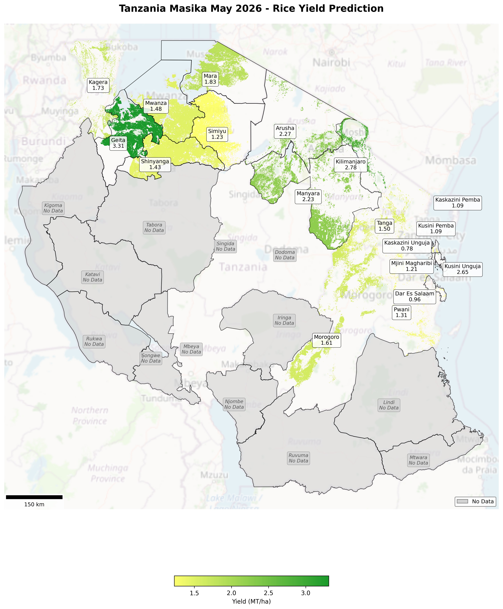
Regional Rice Yield Forecasts — Masika
In May 2026, Tanzania's rice yield prediction shows Geita as the top-performing region with 3.31 MgT/ha, indicating a significantly above-average yield, while Kaskazini Unguja is the lowest at 0.78 MgT/ha. Notable high yields are also predicted in Kilimanjaro (2.78 MgT/ha) and Arusha (2.27 MgT/ha), highlighting strong regional variation during the Masika season.
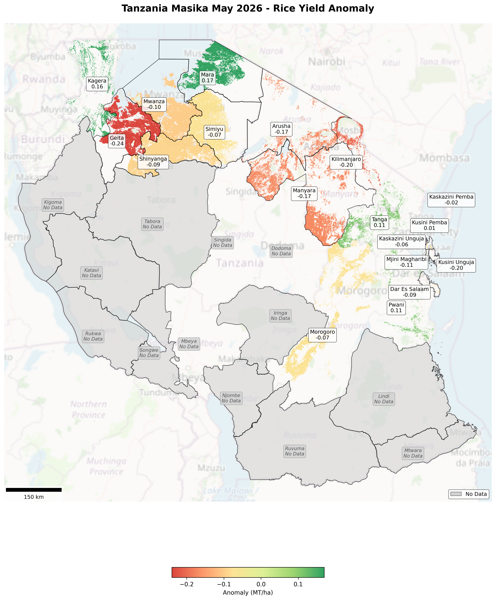
Regional Rice Yield Anomaly — Masika
In May 2026, Tanzania's Masika season rice yield anomaly shows the highest positive deviation in Mara (0.17 MgT/ha) and Kagera (0.16 MgT/ha) regions, while Geita records the lowest negative anomaly at -0.24 MgT/ha. Significant negative anomalies also appear in Arusha and Manyara (-0.17 MgT/ha), indicating notable regional disparities in yield performance.
Beans Maps — Masika
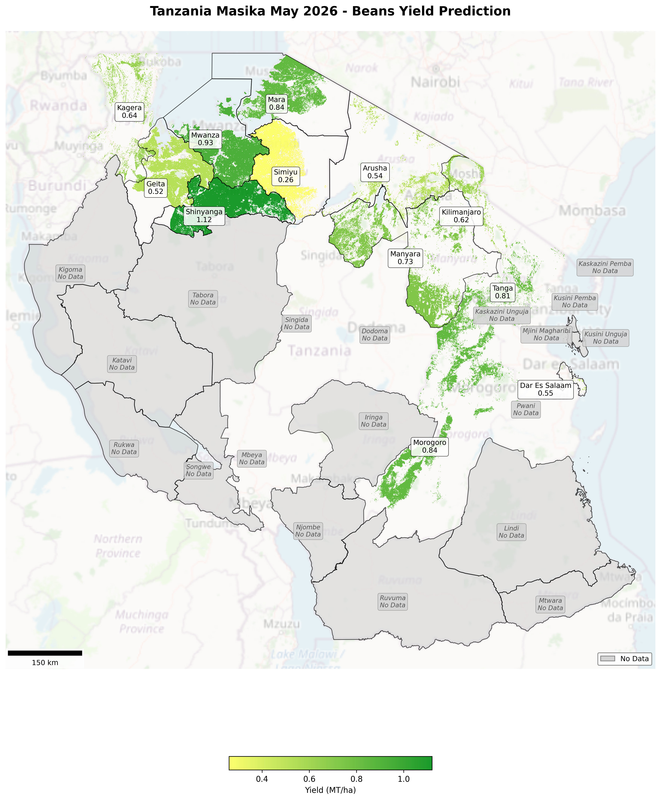
Regional Beans Yield Forecasts — Masika
In May 2026, Shinyanga is the top-performing region for beans yield with 1.12 MgT/ha, while Simiyu shows the lowest yield at 0.26 MgT/ha, indicating significant regional yield anomalies during the Masika season.
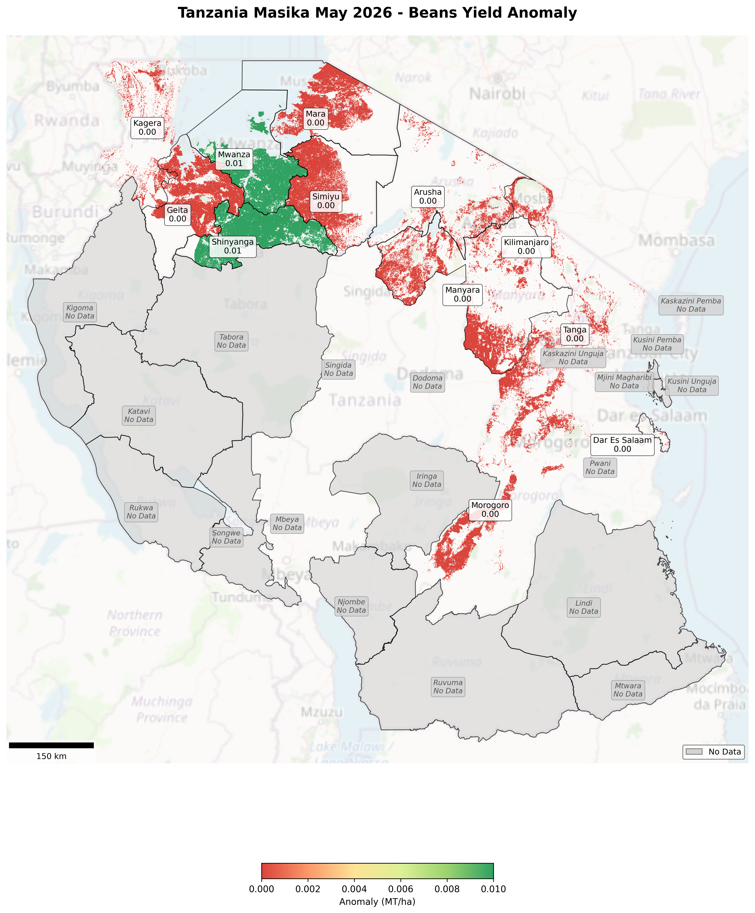
Regional Beans Yield Anomaly — Masika
In May 2026, Tanzania's Masika season beans yield anomaly shows Shinyanga and Mwanza regions as top performers with positive anomalies of 0.01 MgT/ha, while Mara, Geita, Simiyu, Manyara, and Morogoro exhibit negative yield anomalies approaching 0.00 MgT/ha, indicating below-average production. The map highlights a clear north-central and eastern regional contrast in yield anomalies.
Production Narrative
The total production forecast area varies per crop and region, calculated as predicted yield times cultivated area. Maize is the top-performing crop by volume, with Geita producing the highest mean predicted output at 222,397 tons, followed by Shinyanga at 156,832 tons and Morogoro at 134,536 tons. Beans show moderate production with Simiyu having 5,116 tons mean predicted production, Mwanza 15,009 tons, and Shinyanga 23,715 tons. Rice production is lower overall with Geita leading at 68,742 tons, Manyara at 45,719 tons, and Mwanza at 30,051 tons mean predicted production. All three crops maintain stable trends in production, with some uncertainty reflected in the standard errors and varying production ranges particularly in rice and beans. No significant negative shifts are detected, supporting an overall stable outlook for the 2026 Masika season.
Kenya

Figure: Agricultural Calendar – Kenya
Kenya is in the middle of the long rains season running from February to August. The current period in May is towards the latter part of the planting window with the harvest expected to begin in July and continue through August. Crop conditions now reflect the outcomes of the main season's establishment and early development phases for maize, beans, and rice.
Regional Crop Conditions Summary
Bean crop conditions are generally stable with most regions showing neutral or slight positive yield anomalies around zero and under a stable trend. No alarming negative anomalies exist, although yields vary significantly across counties, ranging from as low as 0.14 Mg/ha in Marsabit to 1.36 Mg/ha in Baringo. Maize shows more variability, with many regions experiencing small negative yield anomalies typically around -0.01 to -0.02 Mg/ha and slight declines in yield anomalies, signaling some production stress especially in arid and semi-arid counties such as Mandera, Marsabit, and Garissa. However, several Rift Valley and western counties like Trans Nzoia and Uasin Gishu report relatively high predicted yields above 4 Mg/ha and stable trends. Rice conditions are stable but with notable negative yield anomalies across regions typically between -0.03 and -0.31 Mg/ha, the largest being in Kirinyaga (-0.31). The trend for rice also remains stable. Overall, beans present the most stable conditions, maize the widest range with moderate declines in some areas, and rice consistent but with reduced yields compared to historical averages.
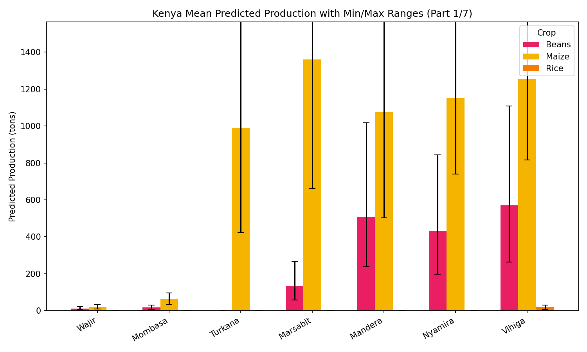
Figure: Mean Predicted Production with Min/Max – Kenya (Part 1)
Bar chart showing mean predicted production for maize, beans, and rice with min/max ranges.
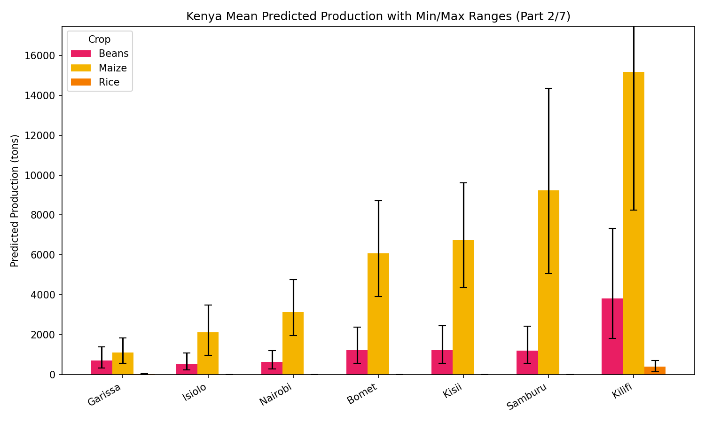
Figure: Mean Predicted Production with Min/Max – Kenya (Part 2)
Bar chart showing mean predicted production for maize, beans, and rice with min/max ranges.
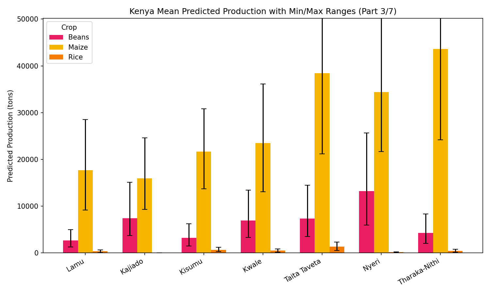
Figure: Mean Predicted Production with Min/Max – Kenya (Part 3)
Bar chart showing mean predicted production for maize, beans, and rice with min/max ranges.
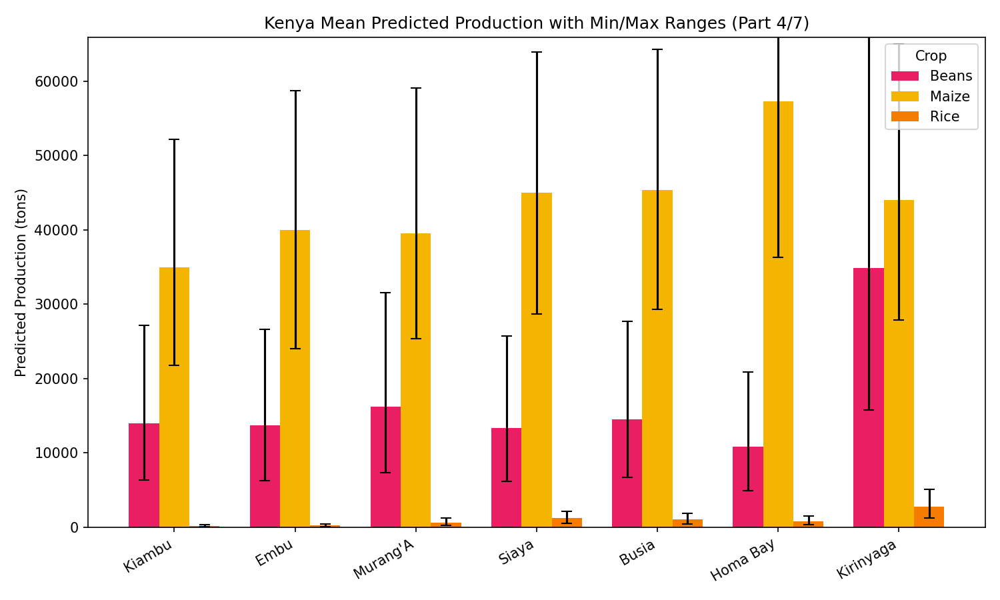
Figure: Mean Predicted Production with Min/Max – Kenya (Part 4)
Bar chart showing mean predicted production for maize, beans, and rice with min/max ranges.
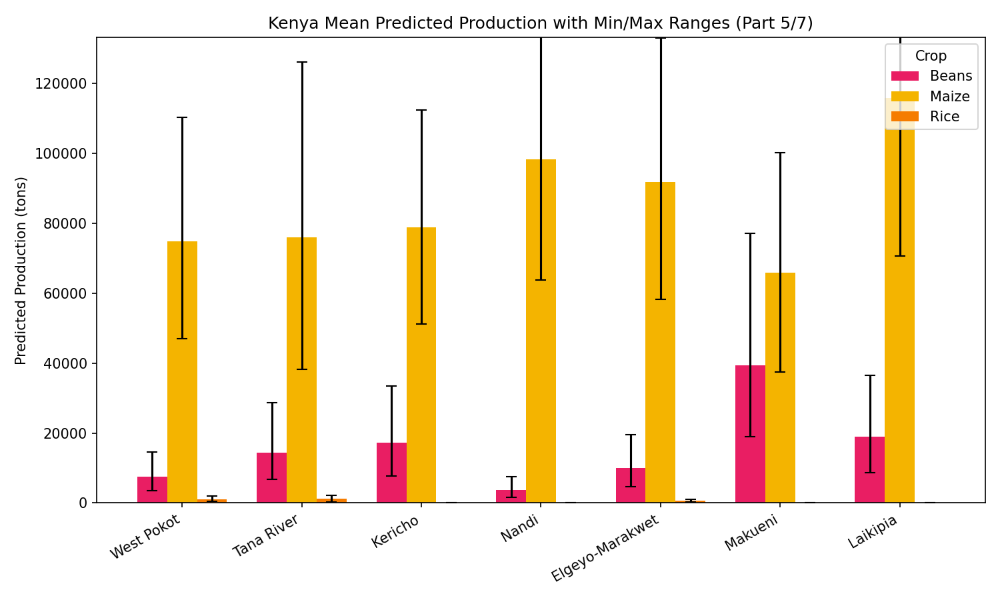
Figure: Mean Predicted Production with Min/Max – Kenya (Part 5)
Bar chart showing mean predicted production for maize, beans, and rice with min/max ranges.
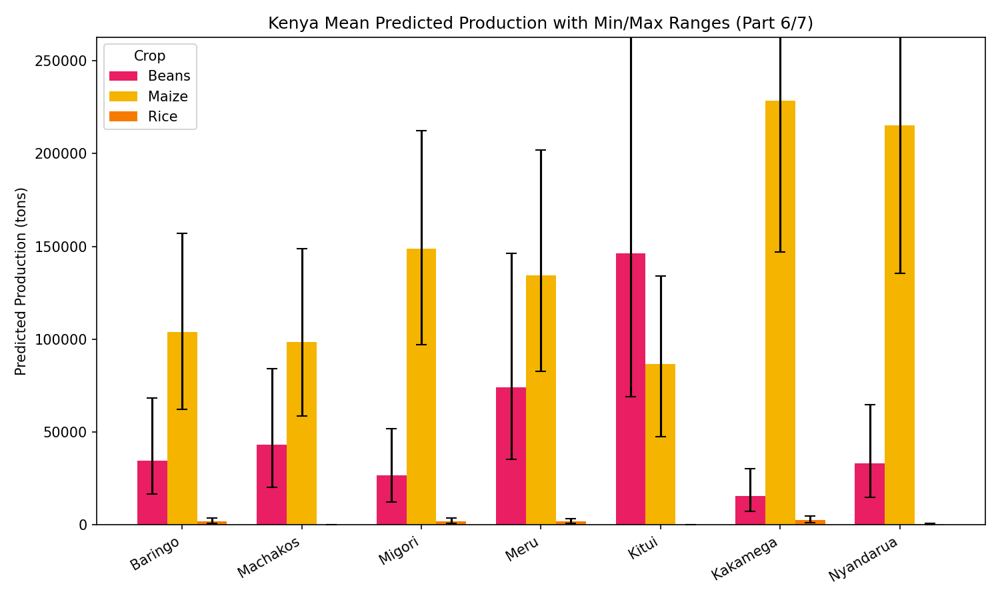
Figure: Mean Predicted Production with Min/Max – Kenya (Part 6)
Bar chart showing mean predicted production for maize, beans, and rice with min/max ranges.
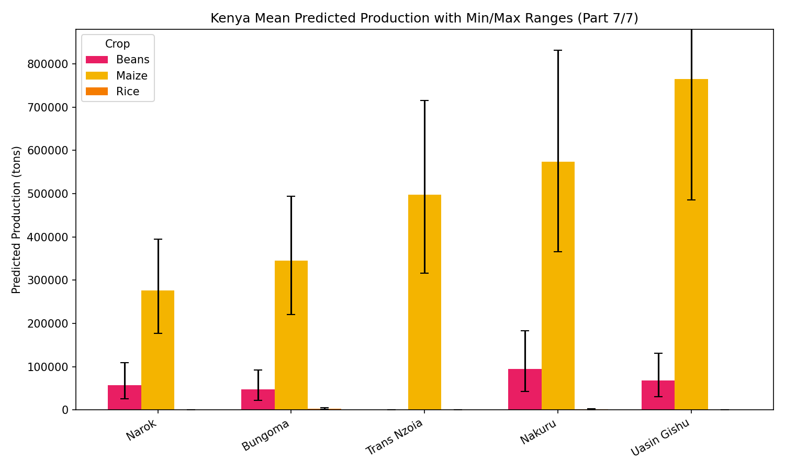
Figure: Mean Predicted Production with Min/Max – Kenya (Part 7)
Bar chart showing mean predicted production for maize, beans, and rice with min/max ranges.
Maize Maps
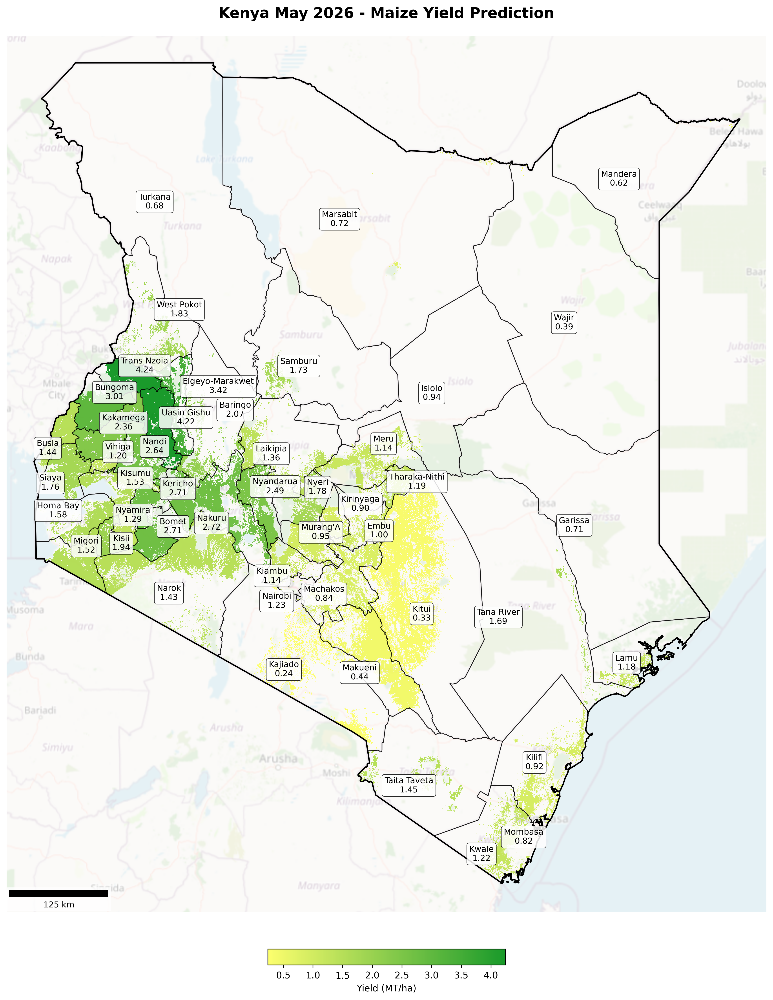
Regional Maize Yield Forecasts
In May 2026, Trans Nzoia is the top-performing region with a maize yield prediction of 4.24 MgT/ha, while Kajiado shows the lowest yield at 0.24 MgT/ha, indicating significant regional yield variation across Kenya.
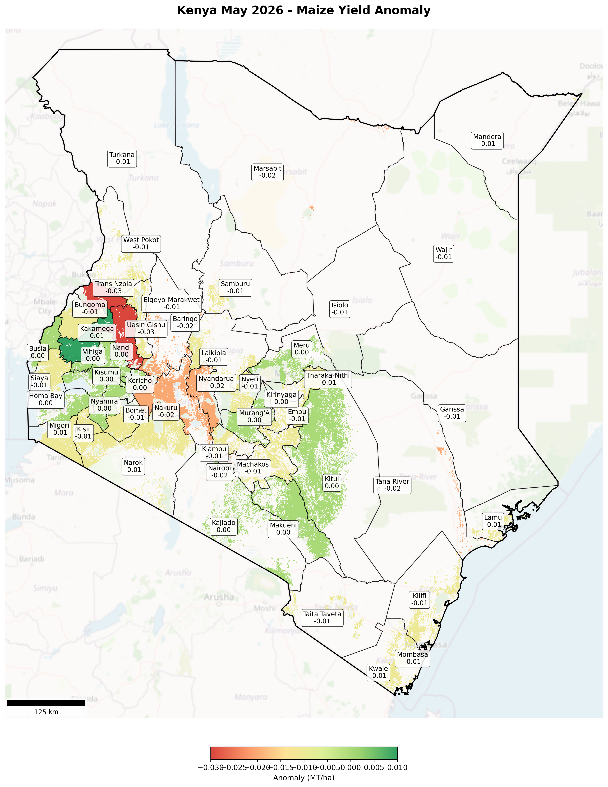
Regional Maize Yield Anomaly
In May 2026, Uasin Gishu and Trans Nzoia regions show the lowest maize yield anomalies at -0.03 MgT/ha, indicating significant negative deviations, while Kakamega exhibits the highest positive anomaly at 0.01 MgT/ha. Most other regions display slight negative anomalies around -0.01 to -0.02 MgT/ha.
Rice Maps
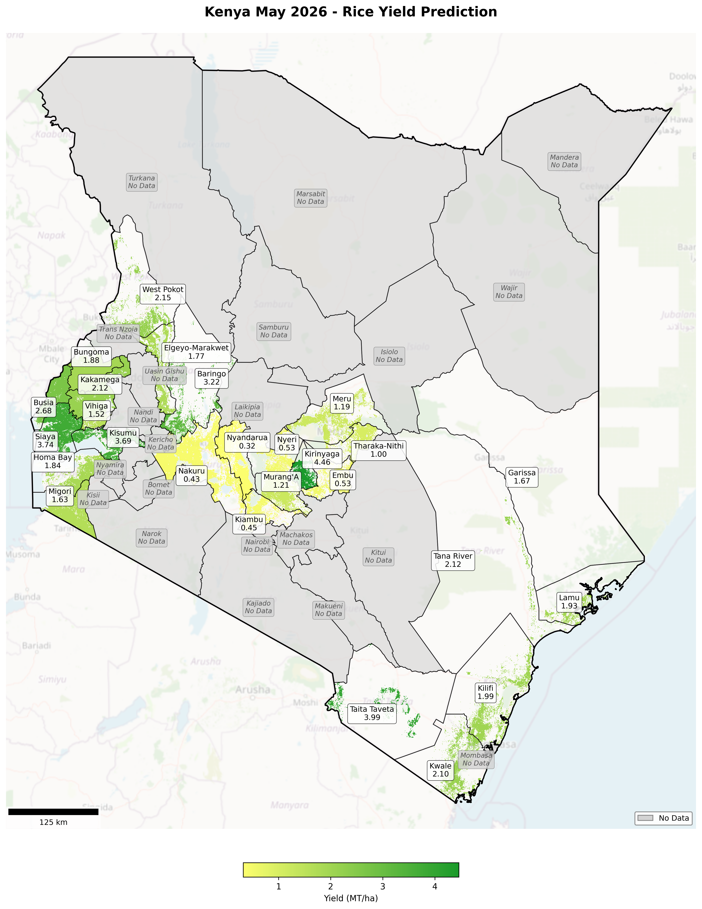
Regional Rice Yield Forecasts
In May 2026, Kirinyaga is predicted to have the highest rice yield in Kenya at 4.46 MgT/ha, while Nyandarua reports the lowest yield at 0.32 MgT/ha. Significant regional variation is evident, with some areas showing negligible to no data on rice yield.
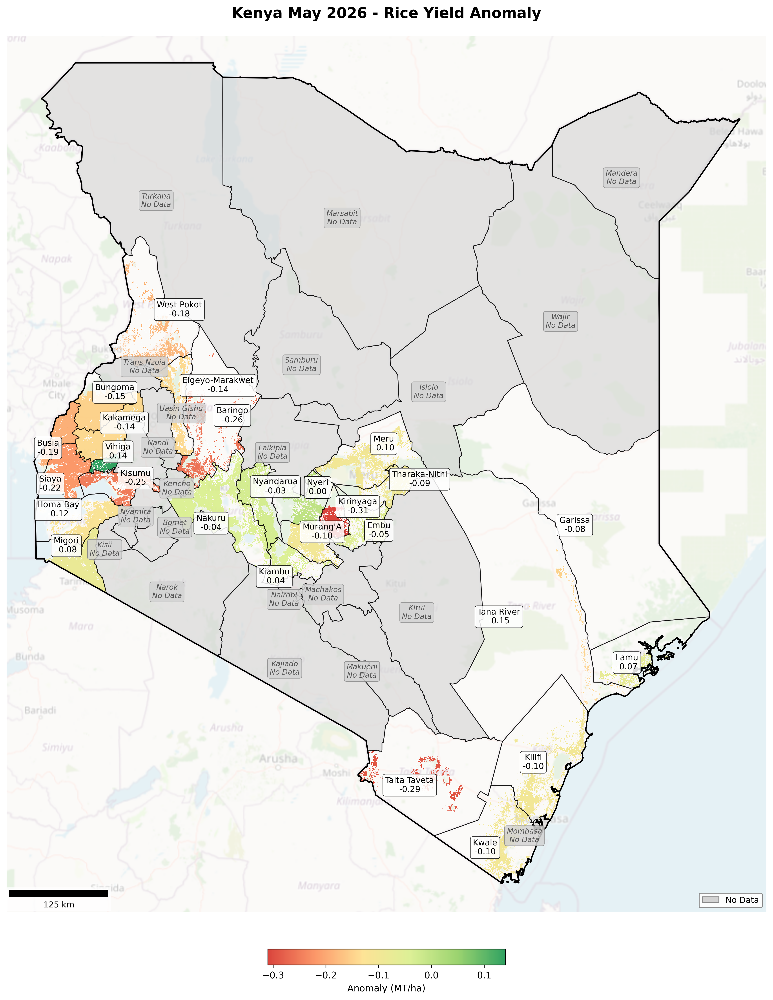
Regional Rice Yield Anomaly
In May 2026, Kirinyaga recorded the lowest rice yield anomaly in Kenya with -0.31 MgT/ha, while Vihiga showed the highest positive anomaly at 0.14 MgT/ha. Most regions exhibited negative anomalies, indicating below-average rice yields.
Beans Maps
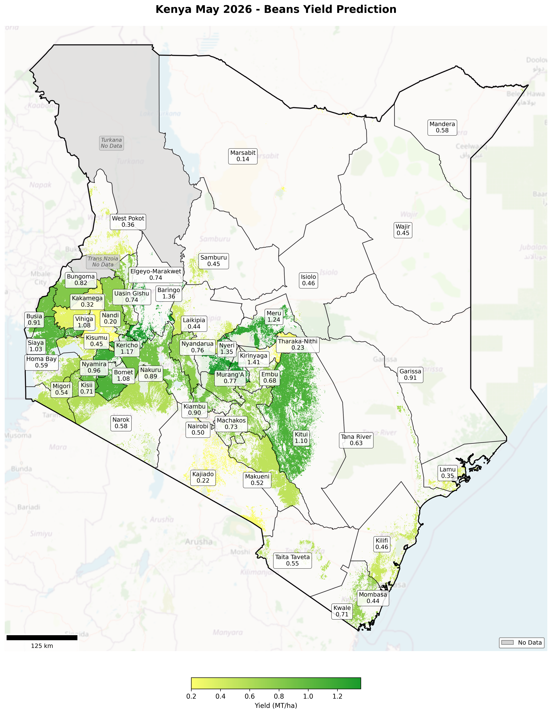
Regional Beans Yield Forecasts
In May 2026, Kirinyaga leads Kenya's beans yield prediction with an estimated 1.41 MgT/ha, while the lowest yield is seen in Marsabit at 0.14 MgT/ha, indicating significant regional disparities in production.
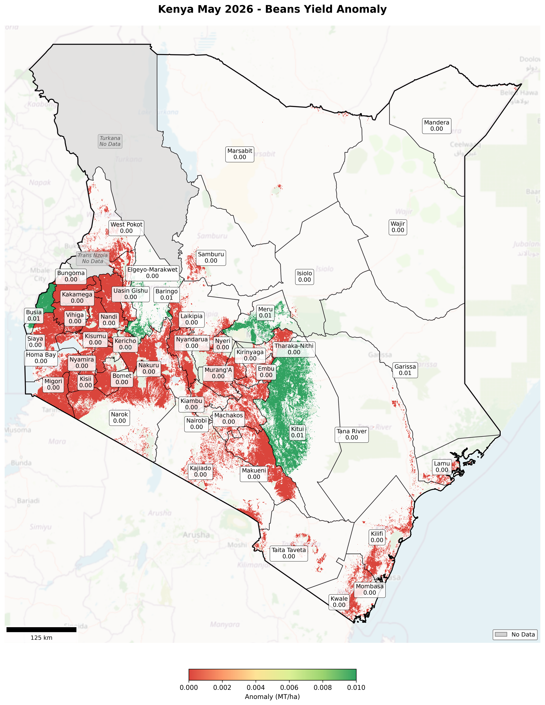
Regional Beans Yield Anomaly
In May 2026, Kenya's bean yield anomaly map shows Baringo, Meru, Busia, Garissa, and Kitui as top-performing regions with a positive anomaly of 0.01 MgT/ha, while most other regions exhibit no change or negative anomalies, particularly in the western and southern areas. Turkana, Trans Nzoia, and other shaded regions show no data available.
Production Narrative
Based on the predicted yields and area harvested, maize stands out as the top crop in production volume. Among maize producers, Nakuru leads with a mean predicted production of 574,056 tons, followed by Uasin Gishu at 765,339 tons and Trans Nzoia with 497,598 tons, showing significant production capacity under stable conditions. Beans production is notable in Kitui with approximately 146,196 tons, followed by Nakuru and Bungoma with 94,929 and 47,524 tons respectively. Rice production is comparatively smaller, with Bungoma leading at around 2,703 tons, followed by Baringo and Busia at 2,025 and 1,059 tons respectively. Although trends are generally stable, maize shows some regions with negative yield anomalies up to -2.53% hinting at vulnerability in arid counties. Rice shows caution with mostly negative yield anomalies though stable trends. Beans production demonstrates consistent stability across all regions.
Regional Production Forecast Tables
Uganda – Regional Production Table
| Crop | Region | Predicted Yield (MT/ha) | Yield Anomaly | Min–Max Production (tons) | Condition |
|---|---|---|---|---|---|
| Beans | Central | 1.03 | 0.02 | 52768.0 – 206676.0 | Favorable |
| Beans | Eastern | 1.17 | 0.02 | 141581.0 – 534032.0 | Favorable |
| Beans | Northern | 3.14 | 0.05 | 816891.0 – 3155444.0 | Favorable |
| Beans | Western | 1.29 | 0.01 | 87892.0 – 340226.0 | Favorable |
| Maize | Central | 1.9 | -0.01 | 295427.0 – 588563.0 | Watch |
| Maize | Eastern | 2.81 | -0.01 | 993471.0 – 1981768.0 | Watch |
| Maize | Northern | 1.26 | -0.01 | 934281.0 – 1924173.0 | Watch |
| Maize | Western | 2.9 | -0.01 | 581767.0 – 1163533.0 | Watch |
| Rice | Central | 0.69 | -0.01 | 9087.0 – 23577.0 | Watch |
| Rice | Eastern | 1.64 | -0.06 | 49386.0 – 129292.0 | Watch |
| Rice | Northern | 0.95 | -0.05 | 60832.0 – 162219.0 | Watch |
| Rice | Western | 1.67 | 0.18 | 25336.0 – 65240.0 | Favorable |
Rwanda – Regional Production Table
| Crop | Region | Predicted Yield (MT/ha) | Yield Anomaly | Min–Max Production (tons) | Condition |
|---|---|---|---|---|---|
| Beans | Amajyaruguru | 0.88 | 0.0 | 31817.0 – 129655.0 | Watch |
| Beans | Amajyepfo | 0.64 | 0.0 | 50727.0 – 208154.0 | Watch |
| Beans | Iburasirazuba | 0.53 | 0.0 | 62387.0 – 252146.0 | Watch |
| Beans | Iburengerazuba | 0.72 | 0.0 | 32109.0 – 129409.0 | Watch |
| Beans | Umujyi Wa Kigali | 1.69 | 0.01 | 10408.0 – 41633.0 | Favorable |
| Maize | Amajyaruguru | 1.75 | -0.01 | 44626.0 – 100611.0 | Watch |
| Maize | Amajyepfo | 1.64 | -0.01 | 92782.0 – 206974.0 | Watch |
| Maize | Iburasirazuba | 1.39 | -0.01 | 116670.0 – 259855.0 | Watch |
| Maize | Iburengerazuba | 1.61 | -0.01 | 50619.0 – 112651.0 | Watch |
| Maize | Umujyi Wa Kigali | 0.97 | -0.01 | 4220.0 – 9324.0 | Watch |
| Rice | Amajyepfo | 3.9 | -0.27 | 18469.0 – 59064.0 | Poor |
| Rice | Iburasirazuba | 4.09 | -0.36 | 29758.0 – 87914.0 | Poor |
| Rice | Iburengerazuba | 4.95 | -0.12 | 11952.0 – 39671.0 | Poor |
| Rice | Umujyi Wa Kigali | 3.66 | -0.34 | 1394.0 – 4126.0 | Poor |
Malawi – Regional Production Table
| Crop | Region | Predicted Yield (MT/ha) | Yield Anomaly | Min–Max Production (tons) | Condition |
|---|---|---|---|---|---|
| Beans | Central Region | 0.52 | 0.0 | 41708.0 – 174085.0 | Watch |
| Beans | Northern Region | 0.68 | 0.01 | 20775.0 – 86449.0 | Favorable |
| Beans | Southern Region | 0.84 | 0.0 | 48828.0 – 192931.0 | Watch |
| Maize | Central Region | 2.45 | 0.04 | 1361510.0 – 3227950.0 | Favorable |
| Maize | Northern Region | 2.21 | 0.04 | 453172.0 – 1069620.0 | Favorable |
| Maize | Southern Region | 1.49 | 0.03 | 521102.0 – 1367892.0 | Favorable |
| Rice | Central Region | 1.74 | 0.22 | 29632.0 – 126432.0 | Favorable |
| Rice | Northern Region | 1.66 | 0.19 | 11097.0 – 45847.0 | Favorable |
| Rice | Southern Region | 1.63 | 0.26 | 18683.0 – 74211.0 | Favorable |
United Republic Of Tanzania – Regional Production Table
| Crop | Region | Predicted Yield (MT/ha) | Yield Anomaly | Min–Max Production (tons) | Condition |
|---|---|---|---|---|---|
| Beans | Arusha | 0.54 | 0.0 | 1103.0 – 4457.0 | Watch |
| Beans | Dar Es Salaam | 0.55 | 0.0 | 2.0 – 9.0 | Watch |
| Beans | Geita | 0.52 | 0.0 | 3962.0 – 16177.0 | Watch |
| Beans | Kagera | 0.64 | 0.0 | 2056.0 – 8154.0 | Watch |
| Beans | Kilimanjaro | 0.62 | 0.0 | 984.0 – 3901.0 | Watch |
| Beans | Manyara | 0.73 | 0.0 | 5540.0 – 21998.0 | Watch |
| Beans | Mara | 0.84 | 0.0 | 3706.0 – 14825.0 | Watch |
| Beans | Morogoro | 0.84 | 0.0 | 6055.0 – 23765.0 | Watch |
| Beans | Mwanza | 0.93 | 0.01 | 7101.0 – 27759.0 | Favorable |
| Beans | Shinyanga | 1.12 | 0.01 | 10799.0 – 44042.0 | Favorable |
| Beans | Simiyu | 0.26 | 0.0 | 2361.0 – 9641.0 | Watch |
| Beans | Tanga | 0.81 | 0.0 | 1804.0 – 7215.0 | Watch |
| Maize | Arusha | 1.51 | 0.0 | 29886.0 – 68488.0 | Watch |
| Maize | Dar Es Salaam | 1.2 | -0.01 | 49.0 – 112.0 | Watch |
| Maize | Geita | 1.91 | 0.0 | 142054.0 – 313218.0 | Watch |
| Maize | Kagera | 1.42 | 0.0 | 43988.0 – 96678.0 | Watch |
| Maize | Kaskazini Pemba | 0.96 | 0.0 | 28.0 – 60.0 | Watch |
| Maize | Kaskazini Unguja | 1.54 | 0.0 | 126.0 – 288.0 | Watch |
| Maize | Kilimanjaro | 2.04 | 0.0 | 30633.0 – 71078.0 | Watch |
| Maize | Kusini Pemba | 1.04 | 0.0 | 14.0 – 32.0 | Watch |
| Maize | Kusini Unguja | 1.36 | 0.0 | 56.0 – 127.0 | Watch |
| Maize | Manyara | 1.19 | 0.0 | 85061.0 – 200008.0 | Watch |
| Maize | Mara | 1.63 | 0.0 | 70391.0 – 154190.0 | Watch |
| Maize | Mjini Magharibi | 1.14 | -0.01 | 15.0 – 35.0 | Watch |
| Maize | Morogoro | 1.26 | 0.0 | 86488.0 – 192195.0 | Watch |
| Maize | Mwanza | 1.18 | 0.0 | 85383.0 – 188981.0 | Watch |
| Maize | Pwani | 1.19 | 0.0 | 4896.0 – 10951.0 | Watch |
| Maize | Shinyanga | 1.05 | 0.0 | 95593.0 – 224046.0 | Watch |
| Maize | Simiyu | 0.97 | 0.0 | 81887.0 – 191533.0 | Watch |
| Maize | Tanga | 1.22 | 0.0 | 25785.0 – 59272.0 | Watch |
| Rice | Arusha | 2.27 | -0.17 | 6607.0 – 22597.0 | Poor |
| Rice | Dar Es Salaam | 0.96 | -0.09 | 6.0 – 17.0 | Watch |
| Rice | Geita | 3.31 | -0.24 | 34267.0 – 111732.0 | Poor |
| Rice | Kagera | 1.73 | 0.16 | 6811.0 – 20089.0 | Favorable |
| Rice | Kaskazini Pemba | 1.09 | -0.02 | 4.0 – 12.0 | Watch |
| Rice | Kaskazini Unguja | 0.78 | -0.06 | 9.0 – 29.0 | Watch |
| Rice | Kilimanjaro | 2.78 | -0.2 | 6359.0 – 18993.0 | Poor |
| Rice | Kusini Pemba | 1.09 | 0.01 | 2.0 – 5.0 | Favorable |
| Rice | Kusini Unguja | 2.65 | -0.2 | 15.0 – 46.0 | Poor |
| Rice | Manyara | 2.23 | -0.17 | 24192.0 – 82418.0 | Poor |
| Rice | Mara | 1.83 | 0.17 | 9924.0 – 29295.0 | Favorable |
| Rice | Mjini Magharibi | 1.21 | -0.11 | 2.0 – 6.0 | Poor |
| Rice | Morogoro | 1.61 | -0.07 | 16378.0 – 48372.0 | Watch |
| Rice | Mwanza | 1.48 | -0.1 | 16244.0 – 49341.0 | Poor |
| Rice | Pwani | 1.31 | 0.11 | 712.0 – 2068.0 | Favorable |
| Rice | Shinyanga | 1.43 | -0.09 | 20247.0 – 62873.0 | Watch |
| Rice | Simiyu | 1.23 | -0.07 | 15101.0 – 50748.0 | Watch |
| Rice | Tanga | 1.5 | 0.11 | 4240.0 – 12422.0 | Favorable |
Kenya – Regional Production Table
| Crop | Region | Predicted Yield (MT/ha) | Yield Anomaly | Min–Max Production (tons) | Condition |
|---|---|---|---|---|---|
| Beans | Baringo | 1.36 | 0.01 | 16479.0 – 68197.0 | Favorable |
| Beans | Bomet | 1.08 | 0.0 | 568.0 – 2395.0 | Watch |
| Beans | Bungoma | 0.82 | 0.0 | 21444.0 – 91570.0 | Watch |
| Beans | Busia | 0.91 | 0.01 | 6687.0 – 27703.0 | Favorable |
| Beans | Elgeyo-Marakwet | 0.74 | 0.0 | 4615.0 – 19545.0 | Watch |
| Beans | Embu | 0.68 | 0.0 | 6263.0 – 26669.0 | Watch |
| Beans | Garissa | 0.91 | 0.01 | 344.0 – 1398.0 | Favorable |
| Beans | Homa Bay | 0.59 | 0.0 | 4950.0 – 20900.0 | Watch |
| Beans | Isiolo | 0.46 | 0.0 | 253.0 – 1102.0 | Watch |
| Beans | Kajiado | 0.22 | 0.0 | 3697.0 – 15124.0 | Watch |
| Beans | Kakamega | 0.32 | 0.0 | 7335.0 – 30317.0 | Watch |
| Beans | Kericho | 1.17 | 0.0 | 7781.0 – 33475.0 | Watch |
| Beans | Kiambu | 0.9 | 0.0 | 6364.0 – 27162.0 | Watch |
| Beans | Kilifi | 0.46 | 0.0 | 1833.0 – 7334.0 | Watch |
| Beans | Kirinyaga | 1.41 | 0.0 | 15812.0 – 67697.0 | Watch |
| Beans | Kisii | 0.71 | 0.0 | 579.0 – 2456.0 | Watch |
| Beans | Kisumu | 0.45 | 0.0 | 1501.0 – 6218.0 | Watch |
| Beans | Kitui | 1.1 | 0.01 | 69111.0 – 287075.0 | Favorable |
| Beans | Kwale | 0.71 | 0.0 | 3303.0 – 13407.0 | Watch |
| Beans | Laikipia | 0.44 | 0.0 | 8603.0 – 36563.0 | Watch |
| Beans | Lamu | 0.35 | 0.0 | 1290.0 – 5007.0 | Watch |
| Beans | Machakos | 0.73 | 0.0 | 20117.0 – 84020.0 | Watch |
| Beans | Makueni | 0.52 | 0.0 | 18898.0 – 77105.0 | Watch |
| Beans | Mandera | 0.58 | 0.0 | 237.0 – 1017.0 | Watch |
| Beans | Marsabit | 0.14 | 0.0 | 57.0 – 267.0 | Watch |
| Beans | Meru | 1.24 | 0.01 | 35191.0 – 146133.0 | Favorable |
| Beans | Migori | 0.54 | 0.0 | 12363.0 – 51926.0 | Watch |
| Beans | Mombasa | 0.44 | 0.0 | 8.0 – 31.0 | Watch |
| Beans | Murang'A | 0.77 | 0.0 | 7356.0 – 31526.0 | Watch |
| Beans | Nairobi | 0.5 | 0.0 | 297.0 – 1213.0 | Watch |
| Beans | Nakuru | 0.89 | 0.0 | 42665.0 – 183459.0 | Watch |
| Beans | Nandi | 0.2 | 0.0 | 1693.0 – 7524.0 | Watch |
| Beans | Narok | 0.58 | 0.0 | 25327.0 – 109100.0 | Watch |
| Beans | Nyamira | 0.96 | 0.0 | 198.0 – 843.0 | Watch |
| Beans | Nyandarua | 0.76 | 0.0 | 14844.0 – 64617.0 | Watch |
| Beans | Nyeri | 1.35 | 0.0 | 5957.0 – 25685.0 | Watch |
| Beans | Samburu | 0.45 | 0.0 | 566.0 – 2426.0 | Watch |
| Beans | Siaya | 1.03 | 0.0 | 6205.0 – 25725.0 | Watch |
| Beans | Taita Taveta | 0.55 | 0.0 | 3482.0 – 14463.0 | Watch |
| Beans | Tana River | 0.63 | 0.0 | 6805.0 – 28579.0 | Watch |
| Beans | Tharaka-Nithi | 0.23 | 0.0 | 2038.0 – 8337.0 | Watch |
| Beans | Uasin Gishu | 0.74 | 0.0 | 30246.0 – 131068.0 | Watch |
| Beans | Vihiga | 1.08 | 0.0 | 264.0 – 1109.0 | Watch |
| Beans | Wajir | 0.45 | 0.0 | 5.0 – 22.0 | Watch |
| Beans | West Pokot | 0.36 | 0.0 | 3507.0 – 14647.0 | Watch |
| Maize | Baringo | 2.07 | -0.02 | 62205.0 – 157016.0 | Watch |
| Maize | Bomet | 2.71 | -0.01 | 3908.0 – 8714.0 | Watch |
| Maize | Bungoma | 3.01 | -0.01 | 220180.0 – 494258.0 | Watch |
| Maize | Busia | 1.44 | 0.0 | 29298.0 – 64266.0 | Watch |
| Maize | Elgeyo-Marakwet | 3.42 | -0.01 | 58278.0 – 132937.0 | Watch |
| Maize | Embu | 1.0 | -0.01 | 23987.0 – 58768.0 | Watch |
| Maize | Garissa | 0.71 | -0.01 | 570.0 – 1835.0 | Watch |
| Maize | Homa Bay | 1.58 | 0.0 | 36277.0 – 80898.0 | Watch |
| Maize | Isiolo | 0.94 | -0.01 | 977.0 – 3499.0 | Watch |
| Maize | Kajiado | 0.24 | 0.0 | 9310.0 – 24606.0 | Watch |
| Maize | Kakamega | 2.36 | 0.01 | 147069.0 – 325100.0 | Favorable |
| Maize | Kericho | 2.71 | 0.0 | 51132.0 – 112431.0 | Watch |
| Maize | Kiambu | 1.14 | -0.01 | 21805.0 – 52209.0 | Watch |
| Maize | Kilifi | 0.92 | -0.01 | 8246.0 – 24242.0 | Watch |
| Maize | Kirinyaga | 0.9 | 0.0 | 27866.0 – 65021.0 | Watch |
| Maize | Kisii | 1.94 | -0.01 | 4373.0 – 9615.0 | Watch |
| Maize | Kisumu | 1.53 | 0.0 | 13719.0 – 30832.0 | Watch |
| Maize | Kitui | 0.33 | 0.0 | 47336.0 – 134118.0 | Watch |
| Maize | Kwale | 1.22 | -0.01 | 13072.0 – 36139.0 | Watch |
| Maize | Laikipia | 1.36 | -0.01 | 70645.0 – 172781.0 | Watch |
| Maize | Lamu | 1.18 | -0.01 | 9157.0 – 28521.0 | Watch |
| Maize | Machakos | 0.84 | -0.01 | 58538.0 – 148688.0 | Watch |
| Maize | Makueni | 0.44 | 0.0 | 37394.0 – 100216.0 | Watch |
| Maize | Mandera | 0.62 | -0.01 | 503.0 – 1770.0 | Watch |
| Maize | Marsabit | 0.72 | -0.02 | 661.0 – 2191.0 | Watch |
| Maize | Meru | 1.14 | 0.0 | 82615.0 – 201816.0 | Watch |
| Maize | Migori | 1.52 | -0.01 | 96874.0 – 212341.0 | Watch |
| Maize | Mombasa | 0.82 | -0.01 | 35.0 – 95.0 | Watch |
| Maize | Murang'A | 0.95 | 0.0 | 25368.0 – 59054.0 | Watch |
| Maize | Nairobi | 1.23 | -0.02 | 1965.0 – 4772.0 | Watch |
| Maize | Nakuru | 2.72 | -0.02 | 365116.0 – 831537.0 | Watch |
| Maize | Nandi | 2.64 | 0.0 | 63648.0 – 139951.0 | Watch |
| Maize | Narok | 1.43 | -0.01 | 177326.0 – 395129.0 | Watch |
| Maize | Nyamira | 1.29 | 0.0 | 741.0 – 1634.0 | Watch |
| Maize | Nyandarua | 2.49 | -0.02 | 135634.0 – 318783.0 | Watch |
| Maize | Nyeri | 1.78 | -0.01 | 21644.0 – 51018.0 | Watch |
| Maize | Samburu | 1.73 | -0.01 | 5068.0 – 14351.0 | Watch |
| Maize | Siaya | 1.76 | -0.01 | 28650.0 – 63950.0 | Watch |
| Maize | Taita Taveta | 1.45 | -0.01 | 21199.0 – 58563.0 | Watch |
| Maize | Tana River | 1.69 | -0.02 | 38148.0 – 126113.0 | Watch |
| Maize | Tharaka-Nithi | 1.19 | -0.01 | 24196.0 – 65988.0 | Watch |
| Maize | Trans Nzoia | 4.24 | -0.03 | 315693.0 – 715884.0 | Watch |
| Maize | Turkana | 0.68 | -0.01 | 422.0 – 1615.0 | Watch |
| Maize | Uasin Gishu | 4.22 | -0.03 | 486045.0 – 1100855.0 | Watch |
| Maize | Vihiga | 1.2 | 0.0 | 816.0 – 1778.0 | Watch |
| Maize | Wajir | 0.39 | -0.01 | 9.0 – 33.0 | Watch |
| Maize | West Pokot | 1.83 | -0.01 | 46944.0 – 110217.0 | Watch |
| Rice | Baringo | 3.22 | -0.26 | 893.0 – 3617.0 | Poor |
| Rice | Bungoma | 1.88 | -0.15 | 1208.0 – 4975.0 | Poor |
| Rice | Busia | 2.68 | -0.19 | 466.0 – 1900.0 | Poor |
| Rice | Elgeyo-Marakwet | 1.77 | -0.14 | 269.0 – 1099.0 | Poor |
| Rice | Embu | 0.53 | -0.05 | 105.0 – 476.0 | Watch |
| Rice | Garissa | 1.67 | -0.08 | 11.0 – 54.0 | Watch |
| Rice | Homa Bay | 1.84 | -0.12 | 372.0 – 1489.0 | Poor |
| Rice | Kakamega | 2.12 | -0.14 | 1128.0 – 4658.0 | Poor |
| Rice | Kiambu | 0.45 | -0.04 | 73.0 – 339.0 | Watch |
| Rice | Kilifi | 1.99 | -0.1 | 142.0 – 709.0 | Poor |
| Rice | Kirinyaga | 4.46 | -0.31 | 1214.0 – 5125.0 | Poor |
| Rice | Kisumu | 3.69 | -0.25 | 290.0 – 1170.0 | Poor |
| Rice | Kwale | 2.1 | -0.1 | 169.0 – 870.0 | Poor |
| Rice | Lamu | 1.93 | -0.07 | 120.0 – 622.0 | Watch |
| Rice | Meru | 1.19 | -0.1 | 784.0 – 3167.0 | Poor |
| Rice | Migori | 1.63 | -0.08 | 871.0 – 3558.0 | Watch |
| Rice | Murang'A | 1.21 | -0.1 | 292.0 – 1219.0 | Poor |
| Rice | Nakuru | 0.43 | -0.04 | 503.0 – 2143.0 | Watch |
| Rice | Nyandarua | 0.32 | -0.03 | 152.0 – 661.0 | Watch |
| Rice | Nyeri | 0.53 | 0.0 | 53.0 – 227.0 | Watch |
| Rice | Siaya | 3.74 | -0.22 | 538.0 – 2131.0 | Poor |
| Rice | Taita Taveta | 3.99 | -0.29 | 481.0 – 2344.0 | Poor |
| Rice | Tana River | 2.12 | -0.15 | 371.0 – 2108.0 | Poor |
| Rice | Tharaka-Nithi | 1.0 | -0.09 | 184.0 – 817.0 | Watch |
| Rice | Vihiga | 1.52 | 0.14 | 6.0 – 31.0 | Favorable |
| Rice | West Pokot | 2.15 | -0.18 | 424.0 – 2013.0 | Poor |
Model Description and Parameters
Crop Conditions Classes
| Class | Definition |
|---|---|
| Exceptional | Conditions are much better than average at the time of reporting. Used only during the grain-filling through harvest stages. |
| Favorable | Conditions range from slightly below to slightly above-average at reporting time. |
| Watch | Near average but with risk to final yields; recovery possible if conditions improve. |
| Poor | Well below average; yields likely 10–25% below average with limited recovery potential. |
Data Sources
| Data Type | Source |
|---|---|
| NDVI | UMD GLAM system |
| ESI | NASA SERVIR Global |
| Precipitation | CHIRPS (historical), NOAA CPC |
| Precipitation Forecast | CHIRPS-GEFS |
| Soil Moisture | NASA–USDA Global (SMOS) |
| Temperature | NOAA CPC |
Model Performance Summary
Our yield prediction model is evaluated using historical data to assess accuracy and reliability. Performance metrics are calculated by comparing predicted yields against actual reported yields from previous seasons. The ensemble approach combines multiple remote sensing inputs (NDVI, ESI, precipitation, soil moisture) across a random forest architecture trained per country and crop.
Metrics Explanation
- R² Score: Coefficient of determination (0–1); values above 0.7 indicate strong predictive power.
- RMSE: Root Mean Square Error — average magnitude of prediction errors in MT/ha. Lower is better.
- MAE: Mean Absolute Error — average absolute difference between predicted and actual yields in MT/ha. Lower is better.
Disclaimer
The opinions expressed in this report are those of the authors and do not necessarily reflect the official policy or position of AGRA, its employees, partners, or affiliates. While every effort has been made to ensure the accuracy and completeness of the information, we assume no responsibility for any errors or omissions.
Project Lead: Dr. Catherine Nakalembe
Team: Xylem Lab / NASA Harvest–Africa Team
Date: May